| Home | Anime | Anime Openings | 3DS Games |
I am an otaku who loves the songs that play before an episode begins.
Anime openings are the introduction to every anime episode.
They are the hype machine that gets you excited for the episode you are about to see.
But, they get annoying after about three episodes in.
On the other hand, some songs are just great and you never get tired of them.
CLICK ON THE IMAGE TO ACCESS THE LINK
| 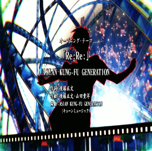 | ERASED OP
Re:Re: by ASIAN KUNG-FU GENERATION Why I like it: J-Rock mixed with scenes related to his time travel abiltiy and events that happen in the anime. |
| 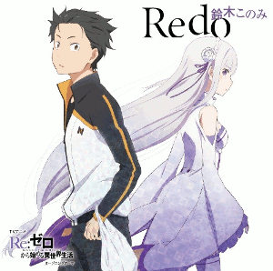 | Re:Zero -Starting Life in Another World- OP
Redo by Suzuki Konomi Why I like it: Subaru's Return by Death, an ability that allows him to go back to a point before he died, is demonstrated in the opening. The J-Rock is also really good as it becomes J-Rock and then calm and then J-Rock again. |
| 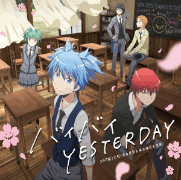 | Assassination Classroom Season 2 OP2
Bye Bye Yesterday by 3-nen E-gumi Utatan Why I like it: The singers are actually the voice actors of the main characters. The opening shows the before and after of all the characters and the deadline before Koro-sensei's assassination. |
| 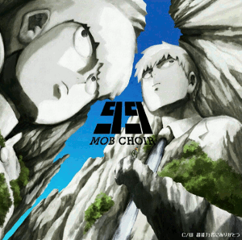 | Mob Psycho 100 OP
99 by MOB CHOIR Why I like it: The opening has strange and random imagery while the song gradually goes to through the numbers one to ninety-nine. |
| 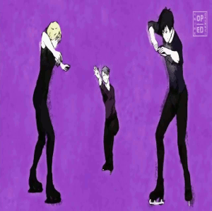 | Yuri on Ice OP
History Maker by Dean Fujioka Why I like it: The songs is actually in English and the main characters are shown ice skating in an artistic drawing style. |
| 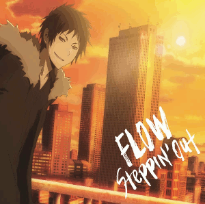 | Durarara x2 Ketsu OP
Steppin' Out by FLOW Why I like it: The opening looks similar to all the other Durarara openings but the song is drastically different than the others. |
| 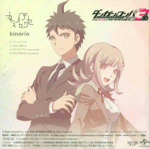 | Danganronpa 3 The End of Hope's Peak Academy (Despair Arc) OP
Kami-iro Awase by binaria Why I like it: The opening is super colorful, until you get near the end and suddenly the colors are all inverted as well as some details change. The song is just different than the other songs on this list. |
| 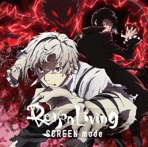 | Bungo Stray Dogs Season 2 OP
Reason Living by SCREEN Mode Why I like it: The song takes a different approach from the first one and the opening's visuals change three times. |
| 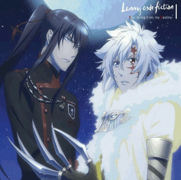 | D.Gray-man Hallow OP
Key -bring it on, my Destiny- by Lenny Code Fiction Why I like it: This opening just makes me feel excited and happy to see the D.Gray-man series continue and the J-Rock opening sounds like every other shounen anime. |
| 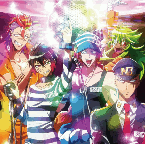 | Nanbaka OP
Rin! Rin! Hi! Hi! by HGK hugs TSB Why I like it: The bright colors, silliness, and playfulness basically describe the whole show and the song sounds fun. |
| 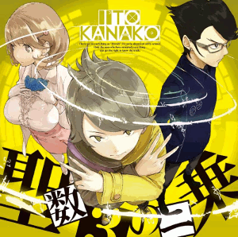 | Occultic;Nine OP
Seisuu 3 no Nijou by Kanako Ito Why I like it: The opening has some strange, mysterious scenes and a mashup of all the main characters with the opening song that just sounds really good! |
| 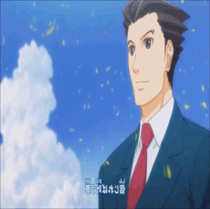 | Ace Attorney OP2
Jinsei wa Subarashii by Johnny's WEST Why I like it: The anime opening basically summarizes the second game. The song also sounds like there is going to be fun and adventures for everybody. |